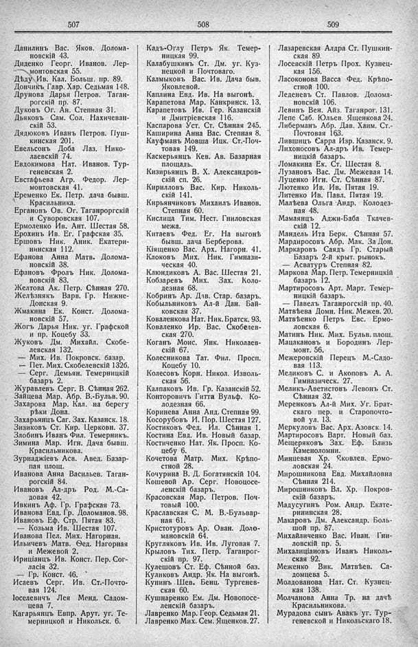

Лист источника 301
Скан

Распознанный текст
507
Данилинъ Вас. Яков. Долома-
новскій 43.
Диденко Георг. Иванов. Лер-
монтовская 55.
Дѣду Ив. Кал. Больш. пр. 89.
Дончикъ Гавр. Хар. Седьмая 148.
Друнова Дарья Петров. Таган-
рогскій пр. 87.
Дуковъ Ог. Ан. Степная 31.
Дьяковъ Сам. Сол. Нахичеван-
скій 53.
Дядюковъ Иванъ Петров. Пуш-
кинская 201.
Евельсонъ Доба Лаз. Нико-
лаевскій 74.
Евдокимова Нат. Иванов. Тур-
геневская 2.
Евстафьева Агр. Федор. Лер-
монтовская 41.
Еременко Ек. Петр. дача бывш.
Красильника.
Ергановъ Ов. Ог. Таганроргскій
и Суворовская 107.
Ермоленко Ив. Ант. Шестая 58.
Ерохинъ Ив. Ег. Графская 35.
Ершовъ Ник. Аник. Екатери-
нинская 112.
Ефанова Анна Матв. Долома-
новскій 38.
Ефановъ Фролъ Ник. Долома-
новскій 83.
Желтова Ак. Петр. Сѣнная 270.
Желѣзнякъ Варв. Гр. Нижне-
Донская 9.
Жмакина Ек. Конст. Долома-
новскій 57.
Жогъ Дарья Ник. уг. Графской
и пр. Коцебу 33.
Жуковъ Дм. Михайл. Скобе-
левская 132.
— Мих. Ив. Покровск. базар.
— Пет. Мих. Скобелевскій 132б.
— Серг. Демьян. Темерницкій
базаръ 2.
Журавлевъ Серг. В. Сѣнная 262.
Зайцева Мар. Абр. В.-Бульв. 90.
Захарова Мар. Кал. на берегу
рѣки Дона.
Захарьянцъ Саг. Зах. Казанск. 18.
Зизиковъ Ст. Кир. Церковн. 37.
Злобинъ Иванъ Фил. Темерникъ.
Зимина Мар. Игн. Дача бывш.
Красильникова.
Зурнаджіевъ Асв. Авед. Базар-
пая площ.
Иванова Анна Васильев. Таган-
рогскій 84.
Ивановъ Ал-дръ Род. М.-Са-
довая 42.
Ивкинъ Аф. Гр. Графская 73.
Иванова Евд. Гр. Доломанов. 98.
Ивановъ Еф. Стр. Пятая 83.
— Козьма Ив. Шестая 107.
Иванова Пел. Мих. Нагорная.
Ильичевъ Матв. Ѳед. Нагорная
и Межевой 2.
Ириціанцъ Ив. Конст. Пер. Сог-
ласія 32.
— Гр. Конст. 46.
Исаевъ Серг. Ив. Ст.-Почто-
вая 124.
Іоселевичъ Лея Менд. Садом-
цева 7.
Кагарьянцъ Евпр. Арут. уг. Те-
мерницкой и Никольск. 6.
508
Кадъ-Оглу Петръ Як. Темер-
ницкая 99.
Калабушкинъ Ст. Дм. уг. Куз-
нецкой и Почтоваго.
Калмыковъ Вас. Ив. Дача быв.
Яковлевой.
Каплина Евд. Ив. На выгонѣ.
Карапетова Мар. Канкринск. 13.
Карапетовъ Ив. Гер. Казанскій
и Дмитріевская 116.
Каспарова Уст. Ст. Сѣнная 245.
Каширина Анна Вас. Степная 8.
Кауфманъ Мовша Ицк. Ст.-Поч-
товая 149.
Каскерьянцъ Кев. Ав. Базарная
площадь.
Кизирьянцъ В. Х. Александров-
скій сп. 26.
Кирилловъ Вас. Кир. Николь-
скій 141.
Кирьянчиковъ Михаилъ Иванов.
Степная 60.
Кислица Тим. Нест. Гниловская
межа.
Китаевъ Ѳед. Ег. На выгонѣ
бывш. дача Берберова.
Кіященко Вас. Арх. Нагорн. 41.
Клоковъ Мих. Ник. Гимнази-
ческая 40.
Клюндиковъ А. Вас. Шестая 21.
Кобзаревъ Мих. Зах. Коло-
дезная 68.
Кобринъ Ар. Дав. Стар. базаръ.
Кобыльниковъ Ал-й Дан. Бай-
ковская 37.
Коваленкова Нат. Ник. Братск. 93.
Коваленко Ир. Вас. Скобелев-
ская 270.
Коганъ Моис. Янк. Николаев-
скій 67.
Колесникова Тат. Фил. Просп.
Коцебу 10.
Колесовъ Корн. Никол. Изволь-
ская 56.
Калпаковъ Ив. Гр. Казанскій 52.
Конторовичъ Гитта Вульф. Ко-
лодезная 66.
Коринева Анна Анд. Степная 99.
Косорубовъ И. Пор. Шестая 127.
Костиковъ Фед. Ил. Сѣнная 1.
Костина Евд. Ив. Новый базар.
Костиченко Нат. Як. Просп. Ко-
цебу 6.
Кочетова Матр. Мих. Крѣпо-
стной 28.
Кочурина В. Д. Богатянскій 104.
Кошевой Ар. Серг. Новопосе-
ленскій базаръ.
Красовская Мар. Петров. Поч-
товый 100.
Краславская С. М. В.-Бульвар-
ная 61.
Кристотуровъ Ар. Ован. Доло-
мановскій 64.
Кругляковъ Ив. Ив. Луговая 7.
Крыловъ Тих. Петр. Таганрог-
скій пр. 97.
Кулешовъ Ст. Еф. Сѣнной баз.
Куликовъ Андр. Як. На выгонѣ.
Кунинъ Шев. Бенц. Тургенев-
ская 60.
Кушнаренко Ем. Дм. Новопосе-
ленскій базаръ.
Лавренко Мар. Геор. Седьмая 21.
Лавренко Мих. Сем. Ященков. 27.
509
Лазаревская Алдра Ст. Пушкин-
ская 89.
Лосевскій Петръ Прох. Кузнец-
кая 156.
Ласоконова Васса Ѳед. Крѣпо-
стной 100.
Леденевъ Ст. Павлов. Долома-
новскій 106.
Левинъ Вен. Айз. Таганрог. 131.
Лепе Саб. Юльев. Ященкова 24.
Либерманъ Абр. Дав. Хаим. Ст.-
Почтовая 163.
Лившицъ Сарра Изр. Казанск. 9.
Лихоносовъ Ал-дръ Ив. Темер-
ницкій базаръ.
Ломакина Ек. Ст. Шестая 8.
Лузановъ Вас. Дм. Межевая 14.
Луценко Игн. Ст. Сѣнная 87.
Лютенко Ив. Ив. Пятая 19.
Литенко Ив. Павл. Пятая 19.
Малѣева Ольга Андр. Колодез-
ная 48.
Мамаянцъ Аджи-Баба Ткачев-
скій 12.
Мандель Ита Берк. Сѣнная 57.
Мардиросовъ Абр. Мак. За Дон.
Маркаровъ Саядъ Гр. Старый
Базаръ 2-й крыт. рынокъ.
— Асватуръ Степная 82.
Маркова Мар. Петр. Темерницкій
базаръ 12.
Мартиросовъ Арт. Март. Темер-
ницкій базаръ.
— Павелъ Таганрогскій пр. 40.
Матвѣева Домн. Ник. Межев. 20.
Матвѣенко Петръ Евс. Ермо-
ловская 6.
Матинъ Ник. Мих. Бульв. площ.
Мацакановъ и Бородинъ Лер-
монт. 56.
Межеровскій Перецъ М.-Садо-
вая 113.
Меликовъ С. и Акоповъ А. А.
Гимназическ. 27.
Меликъ-Аветистовъ Левонъ Ст.
Сѣнная 32.
Меренковъ Ал-й Мих. Уг. Брат-
скаго пер. и Старопочто-
вой ул. 13.
Меркуловъ Вас. Арх. Азовск. 14.
Мартиросовъ Варт. Новый баз.
Мещеряковъ Зах. Еф. Близъ
Каменоломни.
Минцевая Хр. Яковлев. Ермо-
ловская 24.
Мирошникова Евд. Михайловна
Сѣнная 214.
Мирошниковъ Вл. Хр. Покров-
скій базаръ.
Мадусугинъ Ром. Андр. Екате-
рининская 28.
Макаровъ Дм. Александр. Боль-
шой пр. 87.
Михайличенко Вас. Иван. Гни-
ловскій пр. 5.
Михалиціановъ Иванъ Николь-
ская 92.
Меженко Вик. Матвѣев. Са-
домцева 5.
Молдованова Нат. Ст. Кузнец-
кая 138.
Молчанова Анна Тр. на дачѣ
Красильникова.
Мурадова сынъ Авакъ уг. Тур-
геневской и Никольскаго 18.